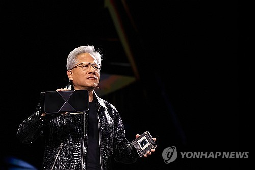
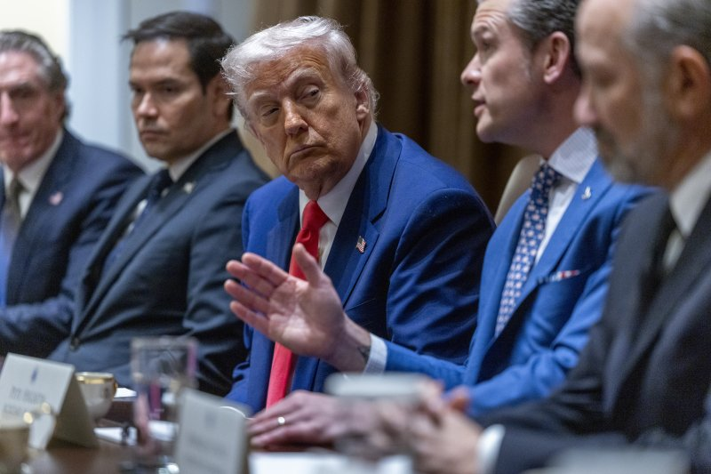
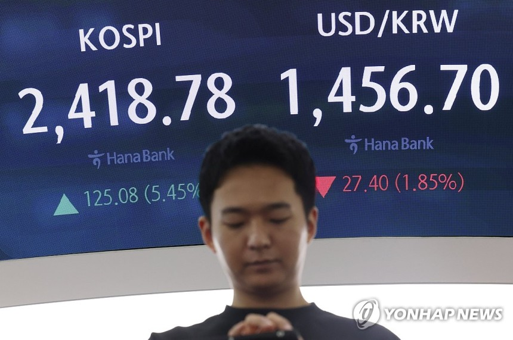
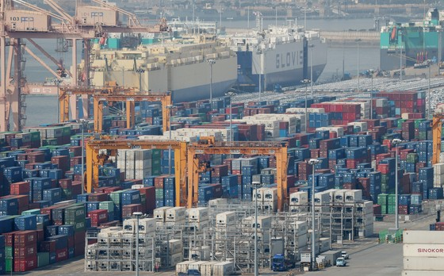
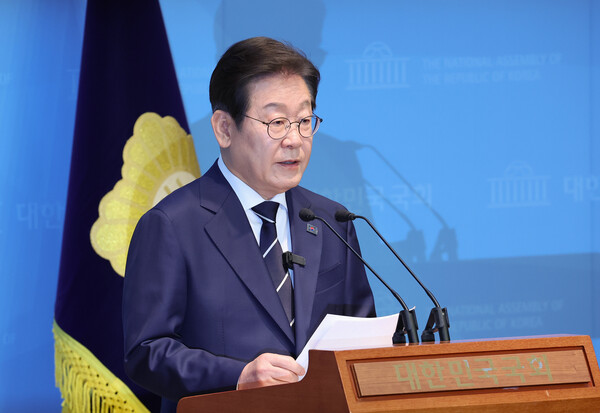

네이버 뉴스
엔비디아, 삼성전자 제치고 반도체 매출 1위…SK하이닉스 4위

엔비디아가 인텔과 삼성전자를 제치고 지난해 반도체 공급사 매출 1위 자리로 올라섰습니다.
삼성전자는 작년 1위였던 인텔을 누르고 2위를 유지했고, 고대역폭 메모리(HBM) 경쟁력으로 성장세인 SK하이닉스는 글로벌 4위로 올라섰습니다.
시장조사업체 가트너에 따르면 2024년 전 세계 반도체 매출은 총 6,559억달러로, 전년(5,421억달러)보다 21% 증가했는데, 이는 올해 초 발표된 예비 조사 전망치보다 약 300억달러 증가한 수치입니다.
수치 변동에 따라 반도체 공급업체 순위도 변동이 생겼습니다.
당초 가트너는 삼성전자가 인텔을 제치고 1위 자리를 탈환할 것으로 예측했지만, 최종 조사에서 엔비디아가 급부상했습니다.
AI 시대 최대 수혜주로 꼽히는 엔비디아는 지난해 반도체 매출이 전년 대비 120.1%나 성장하며 767억달러로 선두에 올랐습니다.
엔비디아는 데이터센터 인공지능(AI) 워크로드에 주로 사용되는 dGPU에 대한 수요 급증에 힘입어 매출이 급증했습니다.
2위인 삼성전자의 반도체 매출은 전년 대비 60.8% 증가한 657억달러로 집계됐습니다.
삼성전자는 반도체 수급 불균형에 따른 급격한 가격 반등으로 D램과 플래시 메모리 분야 모두에서 상승세를 보이며 2023년에 이어 2위 자리를 유지했습니다.
반면 인텔은 AI 수요의 수혜를 벗어난 영향으로 작년 매출이 전년 대비 고작 0.8% 늘어난 498억달러였습니다.
인텔은 지난해 실적 부진으로 대규모 감원을 진행하고 일부 공장 투자를 미루는 등 사상 최악의 위기를 겪고 있습니다. 팻 겔싱어 최고경영자(CEO)도 4년 만에 물러났습니다.
HBM 시장에서 우위를 점한 SK하이닉스의 매출은 전년보다 91.5% 성장한 442억달러였습니다.
SK하이닉스의 성장률은 상위 10개 업체 중 엔비디아에 이어 두 번째로 높으며, 전체 순위에서는 두 계단 상승해 4위를 기록했습니다.
다만 이번 조사에서 반도체 위탁 생산만을 전문으로 하는 글로벌 1위 파운드리 업체인 대만 TSMC는 제외됐습니다.
TSMC는 지난해 연간 순매출이 전년 대비 33.9% 증가한 2조8,943억 대만달러(약 886억달러)로 집계됐다고 밝힌 바 있습니다.
TSMC를 포함하면 TSMC가 사실상 지난해 세계 반도체 매출 1위인 셈입니다.
가트너는 "지난해 상위 10개 반도체 공급업체의 매출 순위 변동은 AI 인프라 구축 수요 급증과 함께 글로벌 메모리 매출이 73.4% 증가한 데 따른 것"이라고 해석했습니다.
#반도체 #엔비디아 #삼성전자 #SK하이닉스
트럼프 정부, 요동치는 美 증시에 "별일 아니다"

[파이낸셜뉴스] 미국 증시가 도널드 트럼프 미국 대통령의 변덕스러운 관세 공격으로 급락한 가운데 트럼프 정부의 경제 담당자들은 “별 일 아니다”라는 반응을 보였다.
미국의 피터 나바로 백악관 무역고문은 10일(현지시간) 증시 마감 이후 현지 매체 CNN과 인터뷰에서 “증시는 어제 역사상 가장 높은 상승률을 기록했다”고 강조했다. 그는 “물론 약간의 후퇴가 있을 것”이라며 “이건 그저 큰 하루를 보낸 다음 찾아온 정상적인 되돌림이다. 별일이 아니다”라고 말했다.
미국 증시는 트럼프가 지난 2일 세계 185곳의 국가 및 지역에 2단계 상호관세를 발표한 이후 하락세를 보이다가 2차 상호관세가 발효된 9일 급반등했다. 트럼프는 이날 관세 발효 13시간 만에 소셜 미디어에 글을 올려 한국 등 중국을 제외한 다른 국가에 적용하는 2차 상호관세를 90일 동안 유예하고 10%의 1차 상호관세만 받는다고 밝혔다. 9일 미국 스탠더드앤드푸어스(S&P)500지수는 9.52% 급등해 세계 2차대전 이후 미 증시 역사상 3번째로 높은 상승률을 기록하며 마감했다. 나스닥지수 상승 폭도 12.16%로 역대 두 번째로 컸다.
그러나 10일 미국 증시는 다시 급락했다. 다우존스30 산업평균지수와 S&P500지수, 나스닥지수는 각각 2.5%, 3.46%, 4.31%씩 내려갔다. 이날 발표된 미국의 3월 소비자물가지수(CPI) 상승률은 2.4%로 시장 전망을 밑돌았지만 트럼프의 관세 전쟁에 대한 시장의 불안을 잠재우지 못했다. 같은날 백악관은 중국에 부과한 상호관세가 125%라며 이전에 마약성 진통제 펜타닐과 관련해 부과한 20% 관세까지 더하면 트럼프가 지난 1월 취임한 이후 중국에 추가한 관세율이 145%라고 확인했다. 해당 발표는 관세 전쟁의 불확실성에 대한 시장의 걱정을 증폭시켰다. 미국 금융사 모건스탠리의 마이클 가펜 수석 이코노미스트는 투자자 보고서에서 "관세 지연은 도움이 되지만 불확실성을 줄이지는 않는다"라고 말했다.
미국 경제에 대한 불확실성은 달러 가치도 끌어내렸다. 10일 주요 6개 통화 대비 달러 가치를 나타내는 ‘달러지수’는 장중 1.83% 떨어지면서 지난해 9월 이후 최저치를 기록하기도 했다.
이날 미국의 스콧 베선트 재무장관은 트럼프가 주재한 각료회의에 참석해 증시 급락 관련 질문을 받자 "오늘 어떤 특이한 것도 없다"라고 말했다. 그는 "오늘 물가상승률 수치가 좋았고 유가는 하락했다. 우리는 성공적인 채권 시장을 갖고 있다"고 덧붙였다. 베선트는 상호관세 협상과 관련해 "이들 국가는 우리에게 최고의 제안을 갖고 올 것"이라면서 "우리는 향후 90일 내 매우 확실한 위치에 있게 될 것"이라고 말했다.
회의를 주재한 트럼프는 증시 급락에 대해 "나는 그것을 보지 못했다"라면서 "왜냐하면 나는 여기에 두 시간 반 있었기 때문"이라고 말했다.
환율, 美상호관세 유예로 38원 급락해 1,440원대로 출발

(서울=연합뉴스) 민선희 기자 = 원/달러 환율이 10일 미국의 상호관세 유예에 40원 가까이 급락한 채 출발했다.
이날 서울 외환시장에서 미국 달러화 대비 원화 환율은 오전 9시 27분 현재 전날 주간 거래 종가(오후 3시 30분 기준가)보다 28.3원 하락한 1,455.8원이다.
환율은 전날보다 38.1원 내린 1,446.0원으로 출발한 뒤 장 초반 1,450원대에서 거래되고 있다.
환율은 전날엔 1,484.1원으로 주간거래를 마치며 금융위기 이후 최고 수준에 올랐다.
그러나 도널드 트럼프 대통령의 상호관세 유예 발표에 시장에서는 위험선호 심리가 회복됐다.
트럼프 대통령은 9일(현지시간) 중국을 제외한 나머지 국가에 대한 상호관세를 90일간 유예하고, 기본관세 10%만 부과하겠다고 밝혔다.
제이미슨 그리어 미국 무역대표부(USTR) 대표도 상호관세 유예와 관련해 "보복하지 않고 협력하겠다, 앞으로 나아갈 길을 찾겠다고 말하는 나라가 아주 많다"고 말했다.
중국이 대(對)미 관세를 84%로 올리고 미국이 대중 관세를 125%로 끌어올리면서 미·중 관세 갈등은 현재진행형이지만, 시장은 일단 관세 협상 가능성에 주목했다.
전날 미 증시에서도 나스닥 지수가 12% 오르는 등 주가가 폭등했다. 국내 증시에서도 코스피지수가 전장보다 101.43포인트(4.42%) 오른 2,395.13으로 출발했고 코스피200선물지수가 6% 가까이 치솟으면서 코스피 프로그램 매수 호가 일시 효력정지(사이드카) 조치가 발동되기도 했다.
주요 6개국 통화 대비 달러 가치를 나타내는 달러인덱스는 0.59% 상승한 102.824 수준이다.
같은 시각 원/엔 재정환율은 100엔당 990.27원에 거래되고 있다. 전날 오후 3시 30분 기준가인 1,020.91원보다 30.64원 떨어졌다.
엔/달러 환율은 전날보다 1.15% 오른 147.059엔이다.
[속보] 4월 1∼10일 수출 13.7% 증가…반도체 32.0%↑

반도체·자동차 등 호조에 힘입어 4월 초순 수출이 증가세로 출발했다.
11일 관세청에 따르면 이달 1~10일 수출은 186억 달러로 1년 전 같은 기간보다 13.7% 증가했다.
조업일수를 고려한 일평균 수출액은 21억9000만달러로 0.3% 늘었다. 이달 1~10일 조업일수는 8.5일로 지난해 같은 기간(7.5일)보다 1일 많다.
월간 수출액은 지난달까지 두달간 증가 흐름을 이어왔다. 올해 1월에는 설 연휴 등 영향으로 감소하며 그동안 15개월 증가 추세에 제동이 걸렸다.
이달 1~10일 수출을 품목별로 보면 반도체(32.0%), 승용차(11.9%), 자동차 부품(10.5%) 등은 증가했다. 반도체 수출 비중은 2.5%포인트 상승한 18.3%였다.
반면 석유제품(-3.9%), 컴퓨터 주변기기(-14.1%) 등 수출액은 감소했다.
국가별로는 중국(8.8%), 유럽연합(EU·30.6%), 베트남(14.3%), 일본(0.7%) 등으로 수출은 늘었고 미국(-0.6%) 등은 줄었다. 중국·미국·EU 등 상위 3개 지역 수출 비중은 49.5%였다.
1~10일 수입액은 197억 달러로 6.5% 늘었다.
품목별로는 원유(10.2%), 반도체(15.5%), 기계류(10.3%) 등에서 증가했고 가스(-19.1%), 석유제품(-7.3%) 등은 감소했다.
국가별로는 중국(4.7%), 미국(2.3%), 일본(15.1%), 호주(19.9%) 등에서의 수입은 늘었고 EU(-18.7%) 등은 줄었다.
수입액이 수출액을 웃돌면서 무역수지는 11억 달러 적자를 기록했다.
이달부터 미국 트럼프 행정부의 관세 정책이 본격화함에 따라 한국 수출도 점차 영향권에 들 것이라는 전망이 나온다.
도널드 트럼프 대통령은 지난 10일 중국을 제외한 나머지 국가에 상호관세를 90일간 유예하고 10% 기본관세를 부과한다고 밝혔다. 지난 2일 세계 국가에 10% 기본관세에 더해 한국 등 57개국에 10%보다 높은 상호관세를 부과하기로 한 결정에서 다소 물러선 것이다.
이재명 “2030여성이 주도한 광장? 국민 모두 함께 해”

이재명 전 더불어민주당 대표가 응원봉을 들고 탄핵 정국을 주도했던 2030여성들을 위한 비전을 묻는 기자의 질문에 "빛의 혁명은 모든 국민이 함께 했다. 국민이라는 거대 공동체 모두의 성과"라고 답했다.
더불어민주당 대선 경선에 출마한 이재명 예비후보는 11일 오전 국회 소통관에서 비전발표회를 마치고 기자들과 질의응답을 가졌다.
이날 "응원봉을 들고 광장을 주도했던 2030여성들에 대해서는 언급이 없다. 2030여성 유권자를 위한 비전은 어떻게 구성하고 있나"는 기자의 질문에 이 예비 후보는 "내란은 지금도 계속되고 있다"고 말을 돌렸다.
이어 "내란의 주요 책임자들이 여전히 다 밝혀지고 있지 않았다. 진상이 정확하게 드러나고 상응하는 명확한 책임이 부과되고, 앞으로는 다시는 이런 일이 생기지 않게 하는 제도적 장치, 사회적 합의가 완료돼야 내란에 대한 청산이 끝난다"고 했다.
이 예비후보는 "안타깝게도 국가질서의 근본은 헌법, 하위 규범인 법과 규범들일 텐데, 최고 규범인 헌법이 일상적으로 무시되고 파괴되고 있다. 잘 아시는 것처럼 대통령 권한대행이 내란대행이라고 불린다. 이런 상황들이 정리돼야 한다"고 했다.
그러면서 "빛의 혁명 과정에는 모든 국민이 함께 했다. 국민들이라는 거대 공동체의 모두의 성과다. 모든 국민들과 함께 가야 한다고 생각한다"고 했다.
민주당이 여성의제와 소수자 의제에 말을 아끼는 것은 이번이 처음이 아니다. 지난해 22대 총선 과정에서 민주당은 비동의 강간죄 도입을 10대 공약으로 제시했다가 "실무적 착오"라며 비동의 강간죄 정책공약을 철회했다.
지난 2월 민주당 전국여성위원회는 동덕여대 학생 인권침해를 규탄하는 기자회견을 열기로 했으나, 돌연 취소했다. 최근 민주당 인권위원장 출신 주철현 국회의원은 자신의 SNS에 "우리 민주당은 차별금지법을 추진한 적이 없고, 추진하고 있지도 않다"고 밝혔다.
한편, 이 예비후보는 이날 비전발표회에서 "대한민국의 국운이 걸린 절체절명의 시기. 내란마저 이겨내고 세계 속에 우뚝 선 위대한 나라임을 증명할지, 파괴와 퇴행의 역주행을 계속할지 결정되는 역사적 분수령"이라며 '내란극복'을 강조했다.